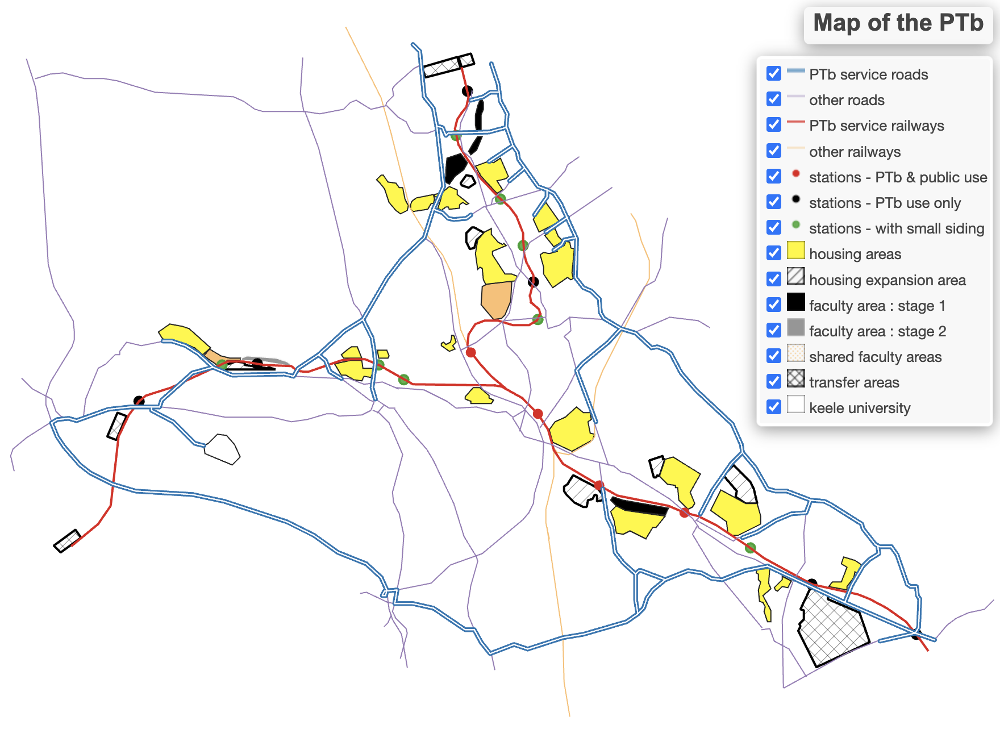

Learn More- On 1 August 2024 GitHub featured a mockup of an interactive map of Cedric Price's Potteries Thinkbelt.
FOREWORD
On 16 June 2024 I wrote to the Canadian Centre for Architecture (CCA) asking:—
- “...is the content of the copy of the report entitled 'Potteries Think Belt: A plan for the establishment of a major advanced educational industry in North Staffordshire' (Reference. Number: DR2004: 0089) the same as the content published in Architectural Design, October 1966?”
On 26 June 2024, I received a reply from the CCA offering to send me a PDF document containing reference images of the report by the end of July. In the event, the file was shared with me on 8 August 2024.
Thus this article is able to take as its starting point the content of the report, an unpublished manuscript completed in February 1966, and compare it with the content of the article published in Architectural Design in October 1966.
It assumes:—
- ... that the Potteries Thinkbelt study was a working hypothesis constructed by Cedric Price as a basis for further ongoing research.
For the purposes of this article I have provided facsimiles of both the report and the article together with extracts from research notes picking out the main points.
Contents
[hide]
- 1FOREWORD
- 2FACSIMILES OF THE KEY DOCUMENTS
- 3ANALYSIS OF THE UNPUBLISHED REPORT
- 4• REPORT COVER
- 5• GENERAL INDEX: DRAWINGS
- 6• 1.0 INTRODUCTION
- 7• 2.0 NATIONAL POLICY
- 8• 3.0 REGIONAL IMPLICATIONS
- 9• 4.0 P.T.B. PLAN
- 10• 5.0 PROPOSALS - GENERAL
- 11• 6.0 PROPOSALS - PARTICULAR
- 12• 7.0 GLOSSARY OF TERMS
- 13• 8.0 BIBLIOGRAPHY
- 14ANALYSIS OF THE PUBLISHED ARTICLE
- 15• ARTICLE COVER
- 16• LIFE-CONDITIONING
- 17• INTRODUCTION
- 18• INTRODUCTION CONTINUED
- 19• MONTAGES ON AERIAL VIEWS
- 20• MEIR TRANSFER AREA
- 21• PITTS HILL TRANSFER AREA
- 22• MADELEY TRANSFER AREA
- 23• FACULTY AREAS
- 24• CRATE HOUSING
- 25• SPRAWL HOUSING
- 26• CAPSULE HOUSING
- 27• BATTERY HOUSING
- 28• LAYOUT OF HOUSING AREAS (1)
- 29• LAYOUT OF HOUSING AREAS (2)
- 30• SOCIO-CIVIC DEVELOPMENT
- 31• ALTERNATIVE ICONOGRAPHY
- 32• OVERALL PLAN
- 33• FACULTY AREAS
- 34• TRANSFER AREAS
- 35• HOUSING AREAS
- 36FURTHER ONGOING RESEARCH
- 37Related articles on Designing Buildings